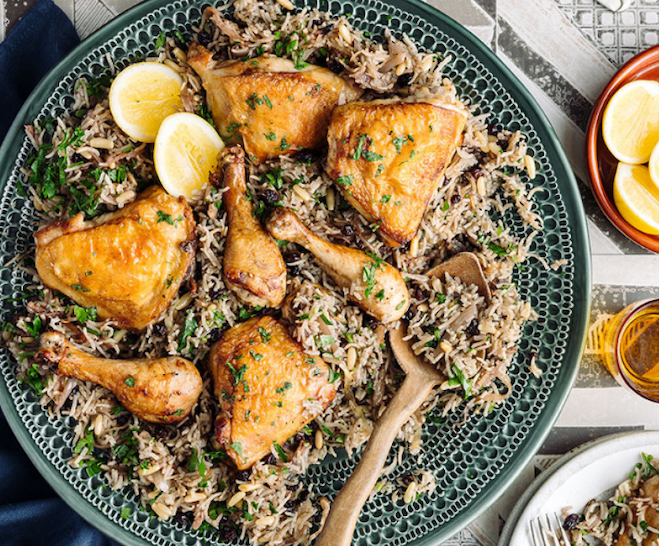

Chicken and pine nut pilav

Description
Aromatic spices and juices from the chicken combine to make this a wonderfully hearty and super delicious one-pan
meal.
Ingredients
- 2 tablespoons olive oil
- 4 skin on, bone in chicken thighs
- 4 chicken drumsticks
- sea salt and ground pepper
- 2 brown onions, thickly sliced
- 3 cloves garlic, crushed
- 1 teaspoon sea salt
- 2 teaspoons each ground cinnamon and ground allspice
- ¼ teaspoon chilli flakes
- 1½ cups long grain rice, rinsed and drained (I used basmati)
- ½ cup pine nuts or chopped roasted almonds
- ½ cup barberries or currants
- 3 cups chicken stock
To serve
small handful parsley, chopped lemon wedges
Method
- Preheat the oven to 180°C fan bake.
- Heat the oil in a large (35cm) ovenproof sauté pan. Season the chicken with salt and pepper and brown on
both
sides. Transfer to a plate. Don’t wash the pan.
- Add the onions, garlic and salt to the pan. Cover and cook for 10 minutes, stirring occasionally. Add
the
spices
and cook for 1 minute then stir in all the remaining ingredients. Nestle the chicken, skin-side up, into
the
rice but not covering the skin. Bake, uncovered, for about 40 minutes, or until the chicken is fully
cooked
through and the rice is tender.
- To serve: Fluff up the rice with a fork and scatter over the parsley. Serve with the lemon wedges.
Recipe Notes
Sourced from dish.co.nz
Home